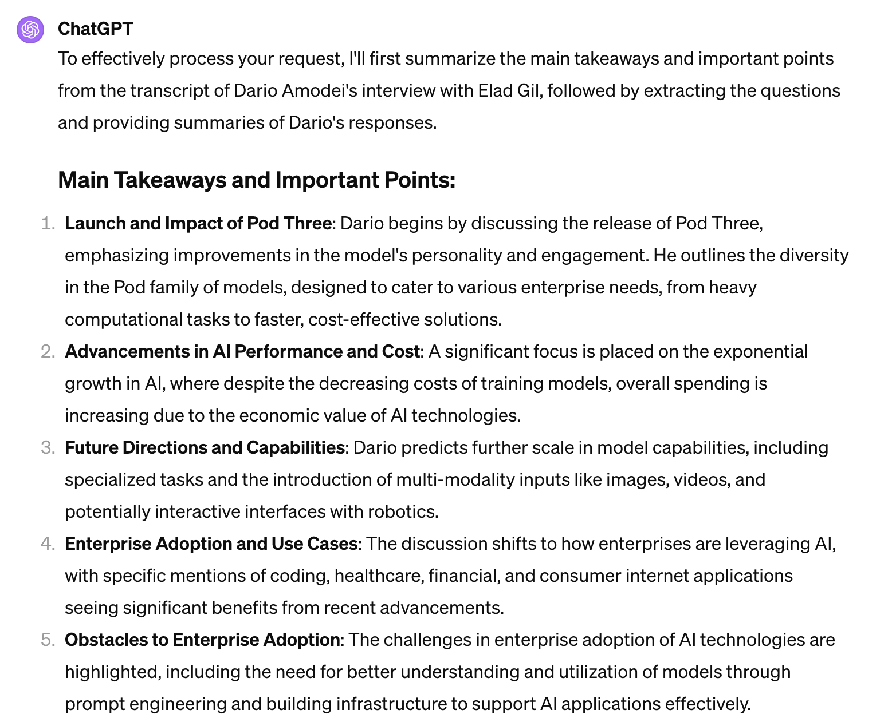
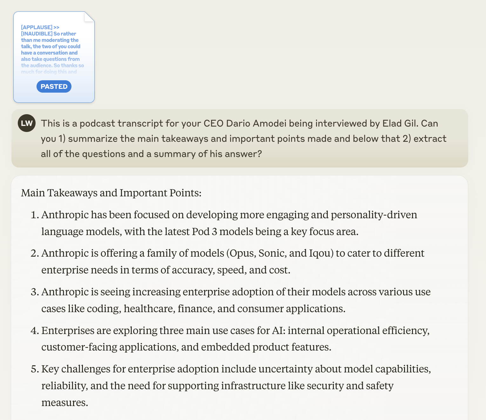

Dario Amodei & Elad Gil
At Google Cloud Next 2024, Elad Gil interviewed Dario Amodei, the CEO of Anthropic. I recorded the talk (really bad audio) and transcribed it using a whisper (small-en) model. I passed the transcription to Claude 3 (Haiku), Gemini Pro 1.5 and GPT-4 to summarize it with this prompt:
This is a podcast transcript for your CEO Dario Amodei being interviewed by Elad Gil. Can you 1) summarize the main takeaways and important points made and below that 2) extract all of the questions and a summary of his answer?
The results are generally pretty good. My qualitative assessment is Gemini Pro 1.5 did the best. GPT-4 was second best. Claude 3 Haiku did a decent job which is not really a fair comparison since Haiku is likely a much smaller model than the previous 2. Google has done a good job with their user interface with the markdown toggle as nice touch. One of the best features of Anthropic is how pasted text is distinct from the user entered text in the prompt which is nice from a UI perspective but also likely helps the LLM know what text it is to operate on.
Gemini Pro 1.5
- Google’s gemini-pro-1.5 does the best job of summarizing the main takeaways
- It actually gets every question (Claude 3’s Haiku only returned 8 questions)
- It corrected spelling errors in the transcription
- There’s a toggle to show the raw markdown (which is really nice!)

Summary of Main Takeaways and Important Points:
- Anthropic’s focus on personality and engagement in language models: Anthropic emphasizes the importance of not only reasoning capabilities but also personality, engagement, and natural conversation flow in their language models. This is evident in the development of Claude 3, with its focus on being warm and human-like in interactions.
- The Claude family of models caters to diverse needs: Anthropic offers a range of models with different sizes and capabilities to meet the varying requirements of enterprises. Claude Instant is fast and affordable, Claude is a good all-rounder, and Claude+ excels in complex tasks requiring high accuracy.
- The cost of training AI models is decreasing but spending is increasing: While the cost of training AI models is decreasing due to advancements in hardware and algorithms, the economic value of these models is driving an exponential increase in overall spending on training.
- Future capabilities of AI models: Anthropic predicts significant advancements in AI capabilities, including improved intelligence through scaling, multi-modality (incorporating video, audio, and real-world interaction), reduced hallucinations, and the development of agents that can act autonomously in the world.
- Growing enterprise use cases: AI models are finding increasing application in various sectors such as coding, healthcare, biomedicine, finance, legal, and consumer applications.
- Challenges in enterprise adoption: Obstacles to wider enterprise adoption of AI include the complexity of understanding and controlling models, the need for effective prompt engineering, and the gap between demos and real-world deployment.
- Anthropic’s commitment to safety and reliability: Anthropic prioritizes safety and reliability in AI development, focusing on reducing hallucinations, preventing jailbreaking, and ensuring models are helpful, honest, and harmless.
- Potential risks of AI: Short-term risks include bias, misinformation, and misuse in critical decision-making. Long-term risks encompass autonomous AI actions that could lead to unintended consequences or misuse with malicious intent.
- Exciting opportunities for AI: AI holds immense potential to revolutionize fields like healthcare and education, offering personalized tutoring, accelerating scientific research, and improving access to information and resources globally.
- Anthropic’s vision for the future: Anthropic aims to develop AI models that act as co-workers, seamlessly integrating with enterprise systems and data to enhance productivity and decision-making. They also strive to set an example for responsible AI development and collaboration within the industry to address challenges and ensure the technology benefits everyone.
Questions and Answers:
Question 1: What are the key features of Claude 3 and the Claude family of models?
Answer: Claude 3 prioritizes personality and engagement, making it more natural and enjoyable to interact with. The Claude family offers models with varying sizes and capabilities, from the fast and affordable Claude Instant to the powerful and accurate Claude+.
Question 2: How is the cost of training AI models evolving?
Answer: While the cost per flop is decreasing due to hardware and algorithmic improvements, the overall spending on training is increasing due to the growing scale and economic value of AI models.
Question 3: What future capabilities do you foresee in AI models?
Answer: We expect advancements in intelligence through scaling, multi-modality, reduced hallucinations, and the development of autonomous agents.
Question 4: What are the challenges in enterprise adoption of AI?
Answer: Challenges include understanding and controlling models, effective prompt engineering, and bridging the gap between demos and real-world deployment.
Question 5: How does Anthropic approach safety and reliability in AI?
Answer: We prioritize safety and reliability by focusing on reducing hallucinations, preventing jailbreaking, and ensuring models are helpful, honest, and harmless.
Question 6: What are the potential risks of AI?
Answer: Short-term risks include bias, misinformation, and misuse in critical decision-making. Long-term risks involve autonomous AI actions with unintended consequences or malicious intent.
Question 7: What excites you about the opportunities presented by AI?
Answer: AI has the potential to revolutionize healthcare, education, and access to information, offering personalized learning, accelerating research, and benefiting people globally.
Question 8: How will Anthropic engage with consumer partners?
Answer: While our focus is on enterprise solutions, the general-purpose nature of our models makes them suitable for consumers who seek productivity and information access.
Question 9: How do you view the role of reasoning modules and memory in AI development?
Answer: Memory capabilities are advancing through larger context windows and RAG techniques. Reasoning abilities improve with model scale and are not a binary concept but rather a continuous spectrum of improvement.
Question 10: What is Anthropic’s long-term vision?
Answer: We aim to create AI models that act as co-workers, integrating with enterprise systems and data. We also strive to lead in responsible AI development and industry collaboration to address challenges and ensure the technology benefits everyone.
GPT-4

Main Takeaways and Important Points:
Launch and Impact of Pod Three: Dario begins by discussing the release of Pod Three, emphasizing improvements in the model’s personality and engagement. He outlines the diversity in the Pod family of models, designed to cater to various enterprise needs, from heavy computational tasks to faster, cost-effective solutions.
Advancements in AI Performance and Cost: A significant focus is placed on the exponential growth in AI, where despite the decreasing costs of training models, overall spending is increasing due to the economic value of AI technologies.
Future Directions and Capabilities: Dario predicts further scale in model capabilities, including specialized tasks and the introduction of multi-modality inputs like images, videos, and potentially interactive interfaces with robotics.
Enterprise Adoption and Use Cases: The discussion shifts to how enterprises are leveraging AI, with specific mentions of coding, healthcare, financial, and consumer internet applications seeing significant benefits from recent advancements.
Obstacles to Enterprise Adoption: The challenges in enterprise adoption of AI technologies are highlighted, including the need for better understanding and utilization of models through prompt engineering and building infrastructure to support AI applications effectively.
Safety and Reliability: Dario emphasizes the importance of safety and reliability in AI models, sharing Anthropic’s focus on making conversational agents helpful, honest, and harmless to ensure trust and prevent misuse.
Risks and Future Concerns: Short-term and long-term risks associated with AI are discussed, with short-term risks revolving around model bias and reliability in critical applications, and long-term concerns about misuse for harmful purposes.
Potential for Global Impact: The conversation concludes with a hopeful outlook on AI’s potential to revolutionize global health, education, and access to information, particularly in underserved regions, while also stressing the need for the industry to manage the risks associated with rapid technological advancement.
Extracted Questions and Summary of Answers:
Pod Three’s Impact and Applications: Dario highlights the focus on improving the personality and engagement of the Pod Three model and introduces the family of models designed to cater to various performance and cost requirements.
AI Performance vs. Cost Dynamics: He discusses the trends in AI training and inference costs, predicting significant decreases in costs but also an increase in overall spending due to the economic value of advanced models.
Future Capabilities and Model Evolution: Dario anticipates further advancements in AI capabilities, including task specialization, multi-modality, and efforts to reduce hallucinations in model outputs, as well as the development of more autonomous AI agents.
Enterprise Use Cases and Adoption: The discussion covers various enterprise applications benefiting from AI, such as coding, healthcare, and consumer internet, and touches on the segmentation of enterprise AI strategy.
Challenges in Enterprise Adoption: He addresses the knowledge gap in utilizing AI models effectively and the distinction between demos and real-world deployment, emphasizing the importance of prompt engineering and infrastructure support.
Safety and Reliability Focus: Dario underscores Anthropic’s commitment to safety and reliability, detailing efforts to reduce model hallucinations and ensure models adhere to principles of being helpful, honest, and harmless.
AI Risks and Management: He distinguishes between short-term and long-term risks associated with AI, highlighting immediate concerns like bias and reliability in critical applications and future risks related to misuse and autonomy.
AI’s Global Impact and Accessibility: The potential for AI to revolutionize access to education and health services globally is discussed, with a focus on ensuring technology benefits are widely distributed.
Consumer Engagement with AI: Although Anthropic is more enterprise-focused, Dario mentions that strong AI models naturally have consumer applications, particularly in productivity and educational contexts.
Memory and Reasoning in AI Development: He elaborates on the importance of memory and reasoning for AI models, explaining ongoing efforts to improve these aspects through scale and specialized training techniques.
Long-term Vision for Anthropic: Dario shares his vision for Anthropic’s role in fostering AI as a coworker and collaborator, contributing to solving complex global challenges while managing the rapid technological advancements and associated risks responsibly.
Claude 3 - Haiku
Some of the issues are coming from whisper mis-transcribing “Haiku” as “Iqou”, “Sonnet” as “Sonic” etc. If every conference talk had this type of summary, that would be so valuable.

Claude 3’s full answer below (had to do some formatting though because the bullets/numbering didn’t copy over to Quarto and it wasn’t following my instructions to produce markdown):
Main Takeaways and Important Points:
- Anthropic has been focused on developing more engaging and personality-driven language models, with the latest Pod 3 models being a key focus area.
- Anthropic is offering a family of models (Opus, Sonic, and Iqou) to cater to different enterprise needs in terms of accuracy, speed, and cost.
- Anthropic is seeing increasing enterprise adoption of their models across various use cases like coding, healthcare, finance, and consumer applications.
- Enterprises are exploring three main use cases for AI: internal operational efficiency, customer-facing applications, and embedded product features.
- Key challenges for enterprise adoption include uncertainty about model capabilities, reliability, and the need for supporting infrastructure like security and safety measures.
- Anthropic is partnering with GCP to provide a secure and reliable platform for deploying their models in enterprise settings.
- Anthropic is excited about the potential of language models to accelerate progress in areas like healthcare, biology, and education, but also cautious about the risks as models become more autonomous and capable. Anthropic’s long-term vision is for their models to act as “coworkers” that can be deeply integrated with enterprise systems and data to enhance productivity and decision-making.
Questions and Answers:
What are the key features and capabilities of the Pod 3 models?
Focus on improving the personality and engagement of the models, as well as offering a family of models (Opus, Sonic, Iqou) with different trade-offs in terms of accuracy, speed, and cost.
How is Anthropic thinking about the cost and performance improvements in training and inference for their models?
Anthropic is seeing exponential improvements in cost-performance, with 1.5-2x annual decreases in the cost of compute and algorithmic improvements, but overall spending on training is still increasing due to the high value of these models.
What are the key enterprise use cases Anthropic is seeing for their models? Coding, healthcare, finance, and consumer internet applications are some of the key areas where enterprises are adopting Anthropic’s models.
How are enterprises thinking about using AI in terms of internal tools, customer-facing applications, and embedding in products?
Enterprises are exploring all three of these use cases, with the type of model used varying based on the specific needs (e.g., smaller models for customer-facing, larger models for internal analysis).
What are some of the key obstacles Anthropic sees for enterprise adoption of AI models?
Uncertainty about model capabilities, reliability, and the need for supporting infrastructure like security and safety measures.
How is Anthropic approaching safety and reliability in the context of their models?
Anthropic has a strong focus on reducing model mistakes and biases, and is working to build the necessary infrastructure (e.g., with GCP) to enable secure and reliable deployment of their models.
What are Anthropic’s thoughts on the potential of AI to accelerate progress in areas like healthcare and biology?
Anthropic is excited about the potential for AI to help overcome the limitations of human cognition and accelerate breakthroughs in complex domains like biology and medicine.
How is Anthropic thinking about the longer-term evolution of AI models, including the role of agents and autonomous systems?
Anthropic envisions a future where their models can act as “coworkers” that are deeply integrated with enterprise systems and data to enhance productivity and decision-making, but also acknowledges the challenges and risks that come with increasingly autonomous AI systems.